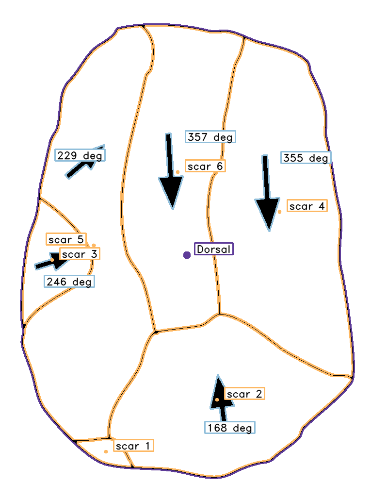
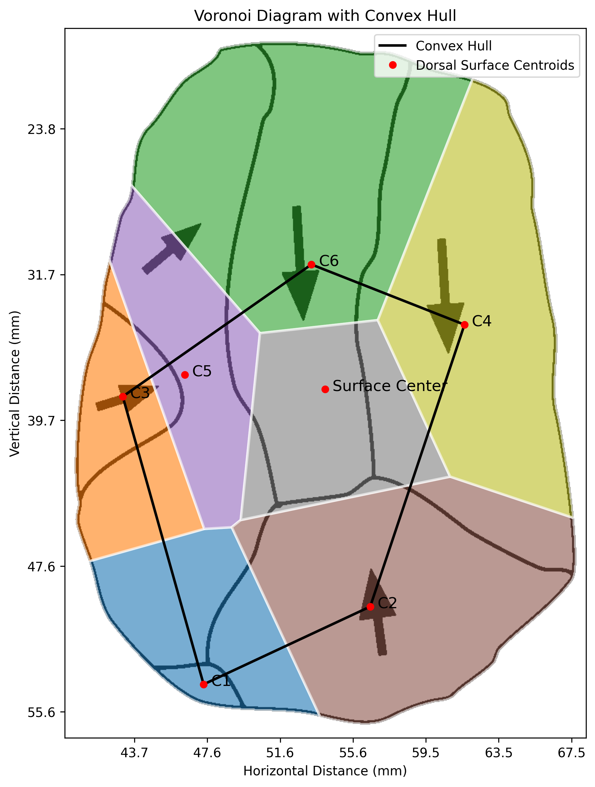

PyLithics Outputs¶
Overview¶
PyLithics writes everything it produces into a single processed/ directory under your --data_dir. This page describes each output file and how to read it.
Output Directory Structure¶
After a successful run:
processed/
├── processed_metrics.csv # Combined metrics for every image
├── pylithics.log # Human-readable processing log
├── run_summary.json # Machine-readable manifest of the run
├── artifact_001_labeled.png # Annotated visualization
├── artifact_001_voronoi.png # Voronoi diagram (Dorsal surfaces only)
├── artifact_002_labeled.png
├── artifact_002_voronoi.png
└── json/ # Only when --export_json is used
├── artifact_001.json
└── artifact_002.json
run_summary.json is a small structured record of the run — timestamp, total / succeeded counts, and per-image entries for both successful and failed images. The interactive dashboard reads it to populate its Overview tiles, particularly the "failed" count (failed images never make it into processed_metrics.csv, so the CSV alone can't tell the dashboard about them). It's regenerated on every run and safe to ignore if you don't use the dashboard. The schema is intentionally simple, so external scripts can also parse it as a machine-readable alternative to grepping the log — but no PyLithics code itself does that today.
Primary Data Output: processed_metrics.csv¶
The single CSV holds one row per detected surface or scar across all images you processed. The schema below lists every column that PyLithics writes; missing values appear as NA.
Identification Columns¶
| Column | Description |
|---|---|
image_id |
Source image filename |
surface_type |
Dorsal, Ventral, Platform, Lateral, or Unclassified |
surface_feature |
Surface name when the row is a parent (e.g. Dorsal); scar/edge/cortex label when the row is a child (e.g. scar 1, edge 2, cortex 1) |
total_dorsal_scars |
Count of scars on the dorsal surface (filled only on the Dorsal parent row) |
Position and Dimensions¶
| Column | Units | Description |
|---|---|---|
centroid_x |
mm or px | X-coordinate of the contour centroid |
centroid_y |
mm or px | Y-coordinate of the contour centroid |
technical_width |
mm or px | Maximum perpendicular width (parent surfaces only) |
technical_length |
mm or px | Platform-to-distal distance (parent surfaces only) |
max_width |
mm or px | Maximum dimension perpendicular to max_length |
max_length |
mm or px | Longest dimension regardless of orientation |
total_area |
mm² or px² | Area enclosed by the contour |
perimeter |
mm or px | Boundary perimeter |
aspect_ratio |
ratio | technical_length / technical_width |
distance_to_max_width |
mm or px | Distance from the platform to the point of maximum width |
Units are millimetres when scale calibration succeeds and pixels otherwise. Check the calibration_method column to confirm.
Voronoi & Convex Hull (Dorsal parent row only)¶
| Column | Units | Description |
|---|---|---|
voronoi_num_cells |
count | Number of Voronoi cells over the dorsal scars |
voronoi_cell_area |
mm² or px² | Area of the Voronoi cell containing this row's centroid |
convex_hull_width |
mm or px | Width of the convex hull around scar centroids |
convex_hull_height |
mm or px | Height of the convex hull |
convex_hull_area |
mm² or px² | Area of the convex hull |
Symmetry (Dorsal parent row only)¶
| Column | Units | Description |
|---|---|---|
top_area |
mm² or px² | Filled-pixel area above the centroid |
bottom_area |
mm² or px² | Filled-pixel area below the centroid |
left_area |
mm² or px² | Filled-pixel area left of the centroid |
right_area |
mm² or px² | Filled-pixel area right of the centroid |
vertical_symmetry |
0–1 | 1 − \|top − bottom\| / (top + bottom) |
horizontal_symmetry |
0–1 | 1 − \|left − right\| / (left + right) |
Lateral Edge¶
| Column | Units | Description |
|---|---|---|
lateral_convexity |
0–1 | Lateral surface area / convex hull area |
Cortex¶
| Column | Units | Description |
|---|---|---|
is_cortex |
bool | True for child rows reclassified as cortex |
cortex_area |
mm² or px² | Area of the cortex region |
cortex_percentage |
0–100 | Cortex area as percentage of parent surface |
Arrows¶
| Column | Units | Description |
|---|---|---|
has_arrow |
bool | True if a directional arrow was detected |
arrow_angle |
degrees | Compass-style angle in PyLithics's rotated frame; see note below |
Arrow Angle Convention
arrow_angle is in a 0–360° compass-style frame, but rotated relative to standard cardinal compass headings: a downward-pointing arrow in image coordinates maps to 0, and a rightward-pointing arrow maps to 270. Treat arrow_angle as a relative value when comparing scars within the same image.
Scar Complexity¶
| Column | Units | Description |
|---|---|---|
scar_complexity |
count | Number of other dorsal scars within the configured adjacency distance |
Scale Calibration Metadata¶
These columns are added when scale-bar calibration was attempted:
| Column | Description |
|---|---|
calibration_method |
scale_bar (real-world units) or pixels (no calibration) |
pixels_per_mm |
Conversion factor applied (omitted when calibration failed) |
scale_confidence |
Detection confidence (0–1) for scale-bar measurement |
Optional Arrow Geometry¶
These columns appear only when arrow detection ran and produced detailed triangle geometry for at least one scar:
triangle_base_length, triangle_height, shaft_solidity, tip_solidity
Visualization Outputs¶
Labeled Images — {image_stem}_labeled.png¶
The original image with overlaid contours, labels, and arrow annotations.
Color coding:
- Purple — Surface (dorsal/ventral/platform/lateral)
- Orange — Scar
- Red — Cortex
- Mint Green — Lateral edge
- Light Purple — Platform mark
- Light Blue — Arrow

Surface classification and scar detection overlaid on the source image.
Voronoi Diagrams — {image_stem}_voronoi.png¶
A Voronoi tessellation of dorsal scar centroids with the convex hull outlined.
- One cell per centroid, clipped to the dorsal surface
- Axes in millimetres when scale calibration succeeded, pixels otherwise
- Convex hull drawn around all centroids

Voronoi tessellation showing spatial distribution of scar centroids.
Per-Lithic JSON Output (Optional)¶
When you pass --export_json, PyLithics writes one JSON file per lithic to processed/json/{image_stem}.json in addition to the CSV. The CSV is unchanged.
The JSON nests metrics by surface and feature, with calibration metadata at the top level:
{
"schema_version": 1,
"image_id": "awbari.png",
"calibration": {
"method": "scale_bar",
"pixels_per_mm": 25.2,
"scale_confidence": 1.0
},
"surfaces": [
{
"surface_type": "Dorsal",
"surface_feature": "Dorsal",
"centroid_x": 1361.76,
"centroid_y": 957.21,
"technical_width": 683.0,
"technical_length": 936.0,
"total_area": 525089.0,
"total_dorsal_scars": 6,
"voronoi": {
"num_cells": 7,
"cell_area": 48384.82,
"convex_hull_width": 468.98,
"convex_hull_height": 576.02,
"convex_hull_area": 165101.47
},
"symmetry": {
"top_area": 257182.0,
"bottom_area": 269162.0,
"vertical_symmetry": 0.98,
"horizontal_symmetry": 1.0
},
"lateral_convexity": null,
"features": [
{
"surface_feature": "scar 1",
"centroid_x": 1194.91,
"centroid_y": 1362.25,
"max_width": 33.38,
"max_length": 120.02,
"total_area": 3534.5,
"voronoi_cell_area": 39808.67,
"scar_complexity": 2,
"is_cortex": false,
"has_arrow": false
}
]
}
]
}
Schema rules¶
- One JSON file per lithic, written to
processed/json/. schema_versionis currently1and bumps on incompatible schema changes.nullfor absent values — every JSON file has the same fixed key set, sopd.json_normalizeand Rjsonlite::fromJSONproduce rectangular dataframes with no surprise missing columns.- Voronoi and symmetry blocks are nested under the Dorsal surface only; they are
nullon Ventral, Platform, and Lateral surfaces. lateral_convexityis a number on Lateral surfaces andnullon the rest.- Cortex children sit alongside scars in the Dorsal surface's
featuresarray, distinguished byis_cortex: true. - Booleans (
is_cortex,has_arrow) are JSON booleans, never strings.
Loading the JSON¶
import json, pandas as pd
with open("pylithics/data/processed/json/awbari.json") as f:
doc = json.load(f)
# Flatten the dorsal features into a dataframe
dorsal = next(s for s in doc["surfaces"] if s["surface_type"] == "Dorsal")
features_df = pd.json_normalize(dorsal["features"])
library(jsonlite)
doc <- fromJSON("pylithics/data/processed/json/awbari.json",
simplifyDataFrame = TRUE)
# Dorsal features as a data frame
dorsal <- doc$surfaces[doc$surfaces$surface_type == "Dorsal", ]
dorsal$features[[1]]
Processing Log: pylithics.log¶
The log captures the full per-step trace of every image the pipeline touches, regardless of how quiet you keep the console. Each run truncates the previous log by default so the file always reflects only the most recent invocation; if you need a history, copy the file off between runs or set a different log_file in config.yaml.
Verbosity model:
- File handler: always at DEBUG — every preprocessing step, every contour, every arrow assignment, every cortex variance reading.
- Console handler: INFO by default — startup metadata, one summary line per image, and the end-of-batch summary. Use
--verbose(or-v) to mirror the file's DEBUG trace on screen. - Third-party libraries (
PIL,matplotlib,fontTools,asyncio) are pinned to WARNING. Their chatty internals never appear in your log.
Useful entries to grep for:
Output directory:— where the run wrote its results<image_id> · <px/mm>— per-image summary at INFO (e.g.awbari.png · 25.20 px/mm)pixels (no scale provided)— image was processed in pixel-only mode by designpixels (scale detection failed — see log)— scale was provided but detection failed; a corresponding[WARNING] Scale image not found:orScale bar detection returned no matchline precedes itimages processed without errors./images processed successfully.— the end-of-batch summary line[WARNING]/[ERROR]— anything that surfaced above the default console level
A typical successful run looks like this:
2026-06-19 10:33:15 [INFO] Config: default
2026-06-19 10:33:15 [INFO] Data directory: pylithics/data
2026-06-19 10:33:15 [INFO] Metadata file: pylithics/data/meta_data.csv
2026-06-19 10:33:15 [INFO] Input validation passed
2026-06-19 10:33:15 [INFO] Output directory: pylithics/data/processed
2026-06-19 10:33:15 [DEBUG] Starting batch processing of 5 images
2026-06-19 10:33:15 [DEBUG] Processing image: awbari.png
... (per-step DEBUG trace for awbari) ...
2026-06-19 10:33:22 [INFO] awbari.png · 25.20 px/mm
2026-06-19 10:33:22 [DEBUG] Processing image: rub_al_khali.png
... etc. ...
2026-06-19 10:34:12 [INFO] qesem_cave.png · 25.20 px/mm
2026-06-19 10:34:12 [INFO] 5/5 images processed without errors.
If any image fails the pipeline raises, the summary becomes <N_succeeded>/<TOTAL> images processed successfully. and a [WARNING] Failed images: … line lists the offenders.
Validation Checklist¶
After each run, verify:
processed_metrics.csvexists and contains one row perimage_id × surface_featurecombination you expected- Each
_labeled.pnglooks right — surface classification matches the artifact, no obvious mis-detected scars - Each Dorsal parent row has a Voronoi diagram if it has scars
calibration_methodisscale_barfor images you provided scales for, and not silentlypixels- Spot-check measurements: a typical flake should land in a sensible range (10–200 mm long, 100–15,000 mm² area)
Working with Output Data¶
R¶
data <- read.csv("pylithics/data/processed/processed_metrics.csv")
# Surface counts
table(data$surface_type, data$surface_feature)
# Length × width on dorsal surfaces
dorsal <- subset(data, surface_feature == "Dorsal")
plot(dorsal$technical_length, dorsal$technical_width,
xlab = "Length (mm)", ylab = "Width (mm)",
col = as.factor(dorsal$image_id))
Python¶
import pandas as pd
import matplotlib.pyplot as plt
df = pd.read_csv("pylithics/data/processed/processed_metrics.csv")
# Parent surfaces only
surfaces = df[df["surface_type"] == df["surface_feature"]]
plt.figure(figsize=(8, 6))
plt.scatter(surfaces["technical_length"], surfaces["technical_width"])
plt.xlabel("Length (mm)")
plt.ylabel("Width (mm)")
plt.title("Surface dimensions")
plt.show()
Next Steps¶
- Glossary — full reference for every column above